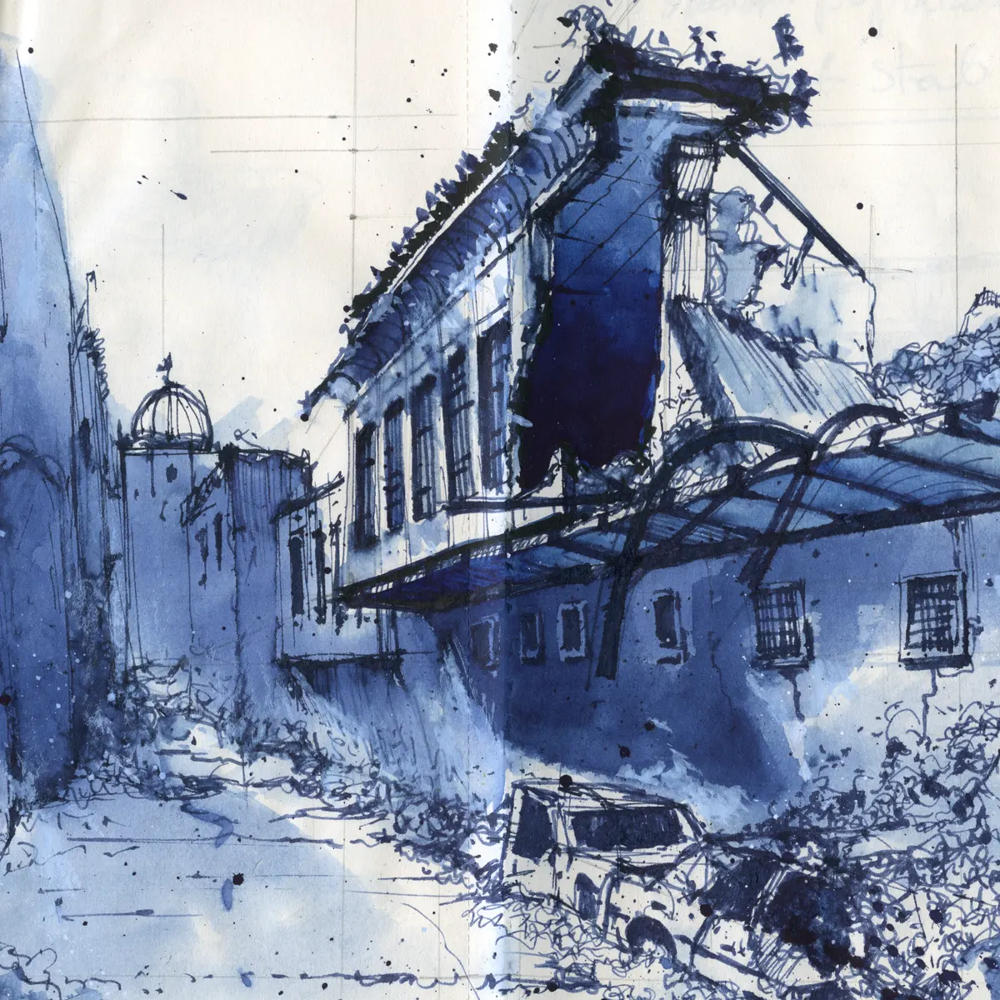

9/11 was an event that has greatly impacted Millennials' generational identity
Millennials are the group of people born between the 80s and 90s. Consisting of millions of people, they have had the privilege of being the first group of people to grow up immersed in the digital world. Video games, social media, online dating, you name it. There is no doubt that these technologies have revolutionized human life. Technology is such a game changer that many people depend on it; careers like streaming or making videos come to mind. However, there is another side to the world millennials have lived; a side consisting of violent wars, heated debates in politics, and economic recessions. Even though millennials have lived through the rapid evolution of technology, turning points in history such as 9/11, the Middle Eastern wars and Islamophobia as a result of it have greatly affected their sense of identity.
A generational sense of identity is defined as one’s sense of belonging to a group, and group can be defined in many ways, including: a hobby/activity, an ethnic group, and in this case, the shared experiences of a people born in the same era. One shared experience that almost every single millennial in America can relate to is the aftermath of 9/11. For context, 9/11 was a terrorist attack; 2 passenger planes crashed into the World Trade Center, the largest buildings in New York. Another crashed into the Pentagon and into a field in Pennsylvania. The perpetrators: Islamic terrorists.
I interviewed my previous neighbor, Peter Y, from Illinois on this topic. As a teenager, he heard about the terrorist attacks hours after it happened. He recalls, “I remember school was canceled for that day, and the next. We were all curious as to what the f*** just happened.” People were confused and scared. These weren’t just the feelings of one person; almost everyone felt this way. The Center for American Progress recalls, “His [the teacher’s] somber tone frightened us and as we were dismissed I clung to my friends out of fear and complete confusion.” Many wondered if more attacks were coming, or if that was it; fear was literally in the air. The feelings of the general public were akin to the Cold War era of “what’s next.”
There is a stereotype about Millennials being very independent and progressive. One may ask, “where did this stereotype come from?” After all, Millennials were the generation that grew up during the times of the unfiltered internet and shows like South Park. One might assume that growing up with edgy television shows and reading conspiracy theories would lead to radical political beliefs, but that necessarily isn’t the case. In fact, according to Pew Research, Millennials are the most liberal generation by far, with 57% agreeing with the terms “mostly liberal” and “consistently liberal”. It’s a large increase compared to Generation X and Baby Boomers.
A reason for this stereotype is because of the Middle Eastern wars, especially the invasions of Afghanistan and Iraq. According to the George W. Bush Presidential Library and Museum, wars were necessary in order to “remove a regime that developed and used weapons of mass destruction, that harbored and supported terrorists,” However, many people were skeptical about the rational behind the wars - especially Millennials. While at the time, the war against the Middle East was generally supported, support started dying down fast. Catherine Lutz of Brown University describes it perfectly: “The war has been long and complex and horrific and unsuccessful…” Her research team also estimated that the war cost over $8 trillion and 900,000 deaths, ranging from civilians to humanitarian aid workers. A lot of that money put the US into debt and many deaths were preventable. Millions of Middle Easterners became refugees in Europe and other countries.
Something I asked to Peter was, “How do people your age view the wars against terrorism?” He said, “From what I’ve seen growing up, many of us didn’t like it. You’ve seen the memes about the US being obsessed with oil and committing war crimes. They’ve all come from somewhere.” The impact of 9/11 has no doubt made its way to the internet and to millennials. In fact, going back to a previous source, a study by The Center for American Progress found that millennials believed that 9/11 was the most important influence in shaping their generation. The talks and conversations that exploded from 9/11 led to more discussions about politics and significant increases in voting. The world in general also changed significantly; civil liberties became limited in the name of security. Examples range from the Patriot Act to stricter immigration policies. Millennials also view these policies poorly; Pew Research has found that Millennials are against strict immigration policies, and are in support of alternative measures. As the idea of liberties being taken away became more commonplace, millennials’ political views became the opposite of that.
While darker, another outcome of 9/11 was the rise in Islamophobia; many people blamed Muslims as a whole for the attacks. Insults such as “terrorist”, “Osama”, and “Muzzie” became quite common. Statista is an online portal providing millions of reviewed statistics, with one of them stating that over 100 different Islamophobic hate crimes were reported in 2020 alone, almost 20 years after the attacks. Islamic hate crimes are still commonplace, even though Muslims have done nothing wrong. One prime example is the Mark Stroman incident. According to The Guardian, he killed 2 men and injured a third because they wore turbans; his motivation was “revenge for 9/11”. Many people felt they needed to enact justice as a way to justify hate crimes. To be clear, Millennials generally aren’t the ones committing these attacks; they’re the ones against them. According to Barna, 46% of Millennials are likely to report hate speech seen online, and 33% on the street, compared to Boomers, standing at 30% and 16%. The significance of this is that there is an increased disdain for hate crimes for Millennials compared to other generations. This is likely because unlike Boomers, Millennials saw the effects of racism firsthand.
In conclusion, millennials as a group have grown a generational sense of identity of being progressive and not being afraid to do what they believe is right. This has mainly been stemmed from growing up during the Middle Eastern conflicts and 9/11. With the spread of the internet, many millennials have strayed away from a bubble of information and have become more well informed about topics at hand. While not perfect, they have been shaped through these events in history.
Works Cited